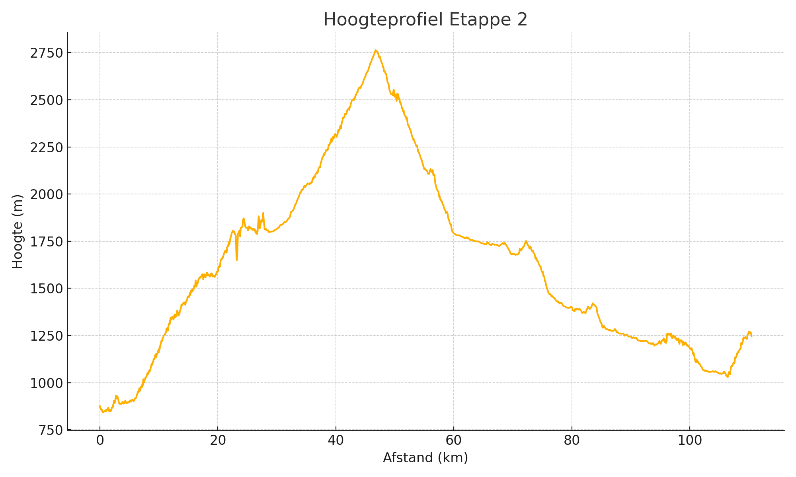

Top van de Col: Cormet d'Iseran

Details
Chauffeur: Maarten
Adres hotel: Le Villeret, Saint-André, 73500, Frankrijk
Voorbeschouwing - kort
Etappe 2 is met 111 km en 3053m klimmen, inclusief de 48 km lange, steile klim naar de Col de l’Iseran, gevolgd door een technische afdaling naar Lanslevillard en een krappe finale in Modane, een ware test van kracht, durf en positionering.
Basisgegevens
| Afstand (km) | Klim (m) |
|---|---|
| 111 | 3053 |
Hoogteprofiel
Voorbeschouwing Etappe 1
Etappe 2 van Bourg-Saint-Maurice naar Modane is met 111 km en 3 053 m klimmen een brute krachtmeting door het hart van de Alpen. Waar de eerste rit al bovengemiddeld zwaar was, volgt vandaag de koninginnenbestemming van de Route des Grandes Alpes: de Col de l’Iseran. Deze hoogste verharde bergpas van Europa zet direct de toon en dwingt renners al op kilometer 10 tot maximale concentratie.
Na het verlaten van Bourg-Saint-Maurice slingert de weg door het dal van de Isère, maar aan de voet van Val-d’Isère begint de meedogenloze 48 km lange klim naar 2 770 m. Met gemiddelde hellingspercentages rond de 7 % en uitschieters boven 10 % vereist elke kilometer gedoseerde kracht en slim schakelwerk. De talloze haarspeldbochten vragen om sturen als een kunstenaar en benen als stalen veren.
Boven op de Iseran-top wacht niet alleen een magisch panorama, maar ook gevaar: scherpe sneeuwresten en ijzige windvlagen kunnen verraderlijk zijn. Renners moeten hier – net als in de Meraillet-etappe – hun wielen schoonhouden en bandenkeuze in de smiezen hebben, want een lekke band boven de boomgrens kost hier meer dan alleen tijd.
De afdaling naar Lanslevillard is lang en technisch: smalle tunnels, rotsfragmenten en scherp ingesneden haarspelden maken dit tot een tweede test waar pure durf beloond wordt. Wie met finesse naar beneden stormt, pakt hier tientallen seconden, maar wie te gretig is, riskeert een schuiver.
Halverwege volgt een korte adempauze in de vallei bij Termignon, maar windvlagen kunnen plots omslaan in tegenwind, wat punchers extra dwarsboomt. De laatste 10 km naar Modane zijn relatief vlak, maar in de smalle straten en scherpe bochten van de grensstad is perfecte positionering cruciaal voor een sprinter met overgebleven punch.